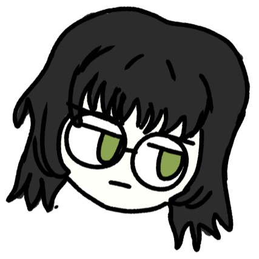

welcome


| music | my chemical romance & their solo work, melanie martinez, muse, avanged sevenfold, type o negative, westkust, jazmin bean, garden psychedelia, sign steelers, pusher174, ghost, korn, linkin park, rita lee, mitski, ls dunes, lady gaga, chappel roan, alice in chains, leathermouth, self, michael jackson, deftones, paramore, system of a down, ptv, ls dunes, pitty, the hives, crystal castles, pinkpantheress, green day, HIM, garbage, tv girl, lil peep |
| games | minecraft, stardew valley, baldurs gate 3, transformice, cs2, lol, the sims, animal crossing, overwatch, rhythm heaven, keep driving, project zomboid, skate., needy girl overdose, oxygen not included (im terrible) cult of the lamb, nintendogs, tomodachi life, cooking mama, |
| hobbies i've had | drawing, gaming, webdesign, live2d animation, quad rollerskates, reading, painting (acrylics & watercolor), wool felting, kung fu (saudade) |
| movies and shows | attack on titan, the x files, studio ghibli, matrix, steven universe, twilight, poor things, arcane, the haunting series, black mirror, yuri on ice, my little pony, the orphan, edward scissorhands, hellraiser, gone girl, e.t, hannibal, fleabag, nope, pluribus, severence, rick n morty, solar opposites, interstellar, mickey 17, the lovely bones, death note |
| foods | chocolate, cinnamon tea, nerds candy!!!!, avocado vitamin, italian food, VEGAN FOOD FROM A SPECIFIC RESTAURANT WHERE I LIVE, carrots, cinnamon candy and gum, carbonara w/ no bacon, milk with coffee and chocolate powder, strawberry jam, strawberries with chocolate, hommus, smashed potatoes, ice cream, pasta with tomato sauce and pesto. |
| kins | fluttershy twilight (mlp), pearl and lapis lazuli (steven universe), jinx, vex, |
| ships | frerard, eruri, bloodweave, vikturi, reibert, eremika, timebomb, jayvik, |
| colors | black, gray, brown, red, low saturated and dark tones |
| smells | rain, good herbs, ocean, home, my cats bellies, my bf, chocolate, cinnamon, matchsticks |
| actress | kristen stewart, keanu reeves, mads mikkelsen, sophie tatcher, robert pattinson, gillian anderson |
| people said i look like: | rita lee, billie eilish (when i was younger), doarda |
my first contact with the internet was through social network games (orkut, facebook) and the sims, when i was little i didn't have much access to the wider internet, just my circle of people i knew. i remember playing games like happy farm, pet mania, simcity? and especially the sims. i have this memory of using a cr4cked disc from my neighbors. i made my family and built this entirely rectangular house with no room divisions or any architectural sense whatsoever lmaooo, at some point the kitchen caught fire, and i remember just closing the game and never opening it again, because i was scared my family would die in real life. that's me in a nutshell, gaming/internet addiction and obsessive compulsive disorder :D even though i didn't really catch the tumblr era (i was more of an instagram and twitter person), i remember seeing the most gorgeous pages on tumblr and always wanting to make one like that. around 2024, i was encouraged by my bf to take some programming courses, and my first steps were through the classics, html and css. i watched some classes from santander academy, ada tech, and another site i got borrowed logins for lol. my first project was a landing page with my main links, kind of like a "linktree", and over time i kept adding more sections, like my 2d animation and photography portfolios, and then i discovered neocities :3 i started thinking about ways to help myself use social media less (instagram, the late twitter now known as x), and the psychological impact is pretty noticeable, society must really be compromised, given how normalized it all is and how even small businesses depend entirely on instagram for exposure. unfortunately i can't quit completely, since most of my clients are on twitter (and i've been there since before it got bought and ruined), and most of the people i know are on instagram.
draw anything (respectful) here!! and click save to post


